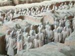
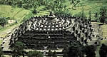
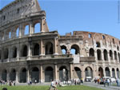
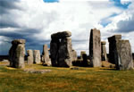

Mt. San Jacinto College
Syllabus, Fall Semester 2006
History 103, History of World Civilizations to 1500
Section 1229
1:00-2:20 p.m. MW, Room 1212
Course Description
History 103 is a survey of the world history from prehistory to 1500 CE. The focus of coursework covers economic, social, political, and cultural aspects with an emphasis on understanding and application of context and causation.
Coursework
Coursework consists of textbook and primary source readings, lecture, discussion and short papers. Exams consist of essays and short answers. Weekly quizzes are primarily multiple choice, true or false and single word answer on the textbook reading assignments. Other weekly reading assignments consist of short answer questions on primary source reading assignments. Course objectives include successful synthesis of historical materials and ideas in the time period covered.
Attendance
Students can miss up to four meetings without repercussions. With the fifth absence, students may be dropped for excessive absences. If the fifth absence occurs after the drop date, the absence will be reflected in the student's grade, due to missed work. If you choose to stop attending, please be sure to drop. The college regards this as your obligation.
Readings
Text: Bulliet, Crossley, et al. The Earth and Its Peoples, 3rd edition
Primary Source: Kishlansky, Sources of World History v. I, 4th edition
Used books can be obtained via the bookstore, the internet, friends, and other bookstores. The books are available at the campus bookstore, but you may save money if you shop around.
Readings vary from 50 to 90 pages a week. Be sure to take the time to read prior to class since quizzes are based on the readings.
Grading
Grades are based on coursework: quizzes, short answer assignments, tests, and papers. Tests are worth 100 points each; quizzes are worth 10, the papers, 50 each; and reading reviews 5. The best 5 quizzes and up to 10 reading reviews will be used toward your grade.
Please note the due dates for papers and dates set for exams in the list of assignments. Quizzes covering the reading for each week will be given at the beginning of class each Tuesday. Reading reviews are done in class on Thursdays following lecture.
There is no extra credit offered, and late work will not be accepted under normal circumstances. If any extenuating circumstances arise which may hinder your attendance or ability to complete course expectations or if you require special accommodations due to a disability, please notify me as soon as possible. In the case of extenuating circumstances, I may accept late work, but with a reduction in grade.
If you miss an exam or paper due date you are required to contact me before the end of that work day or accept a failing grade for the missed work, regardless of the circumstance. Papers may be emailed me or dropped off at or sent to the Learning Center in the library in extenuating circumstances verified by me.
A Note on Plagiarism
Whenever you quote five or more consecutive words from a work that is not your own, you must use quotation marks and pass reference to the author, page number (if from a book or article) or source if the previous are not available. For example, the following quote was taken from page 418 of your text:
"Since ancient times travel across the salt waters of the world's seas and oceans had been one of the great challenges to people's technological ingenuity." (Bulliet, 418)
To not pass reference properly is to plagiarize, whether you do so consciously or inadvertently. Plagiarism and cheating will result in a "0" on the assignment if detected.
Testing
Since testing is primarily essay and short answer, writing skills are essential for this class. If you have never taken any courses that require written tests in college or high school, or if you believe that writing is your worst skill, and if you have not taken any composition courses in college (English 098 or English 101 are recommended) then you should consider taking a composition course before continuing with this one.
Probable curve, based on a total of 500 points:
- A = 435 = 87%
- B = 375 = 75%
- C = 315 = 63%
- D = 265 = 53%
- F = 264 and below
Course Schedule
The instructor reserves the right to change the following information as necessary. Listen to class announcements for possible changes.
contact info
E-Mail: zworley@msjc.edu
Phone: (951) 487-6752
Ext: 1588 x 712
office hours
By Appointment

historic images

Terra Cotta Warriors
of Ancient China

The Temple of Borobodur
Java, Indonesia
(Photo Source)
Virtual Rendering of
the Modern Parthenon
(Photo Source)

The Colosseum
Rome, Italy
(Photo Source)

Stonehenge
England
Dome of the Rock
Jerusalem, Israel